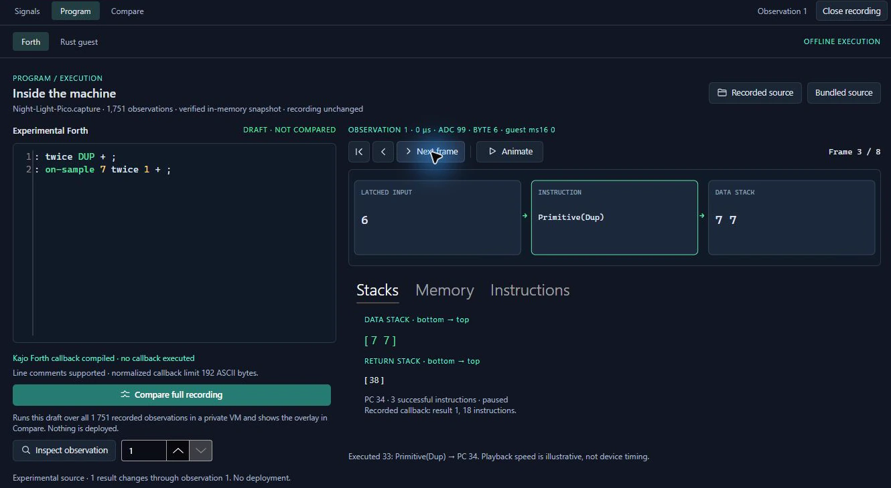

Data stack
Holds the numbers a word works with and the results it leaves behind. The word twice takes 7 and leaves 14.
Kajo Lab 101
One Forth word calls another. Follow what the machine does with the numbers and how it remembers where to resume.

DUP, the data stack holds [7 7]. The return stack still holds [38], the address where the caller will resume.Kajo’s Forth virtual machine (VM) is the software that runs Forth instructions. A stack works like a pile. The last item placed on it is the first one taken off. In Lab, the top of each stack is on the right.
Holds the numbers a word works with and the results it leaves behind. The word twice takes 7 and leaves 14.
For this call, holds the instruction address where the caller should continue after twice finishes.
Lab starts at on-sample. It pushes 7, calls twice, then adds 1 after that word returns.
: twice DUP + ;
: on-sample 7 twice 1 + ;| After this instruction | Data stack | Return stack |
|---|---|---|
Push 7 | [7] | Empty |
Call twice | [7] | [38] |
Copy the top with DUP | [7 7] | [38] |
Run + inside twice | [14] | [38] |
Return from twice | [14] | Empty |
Push 1 | [14 1] | Empty |
Run + inside on-sample | [15] | Empty |
Finish on-sample | [15] | Empty |
When twice returns, the VM takes 38 off the return stack and uses it to set the program counter (PC). In this trace, that address points to the instruction that pushes 1. The 14 on the data stack is still there for the caller to use. The number 38 is an address for this trace and can change with the source or Lab build.
In Kajo Lab on Windows, use a saved recording to give Lab an observation to inspect. The draft uses its own value of 7. You can run it with the Pico unplugged.
twice and the return. Continue through the end of on-sample until Lab shows This callback: result 15. The saved observation still shows Recorded callback: result 1.Change 7 to 9 in on-sample. Predict what the VM will do before choosing Inspect observation again. You can also work through the questions entirely here.
twice returns?twice leaves [18]. Back in the caller, 1 + changes it to [19]. The callback finishes with 19.
It holds one address just after the call and is empty just after the return. The choice of 7 or 9 changes the data, while the machine still has one call to return from.